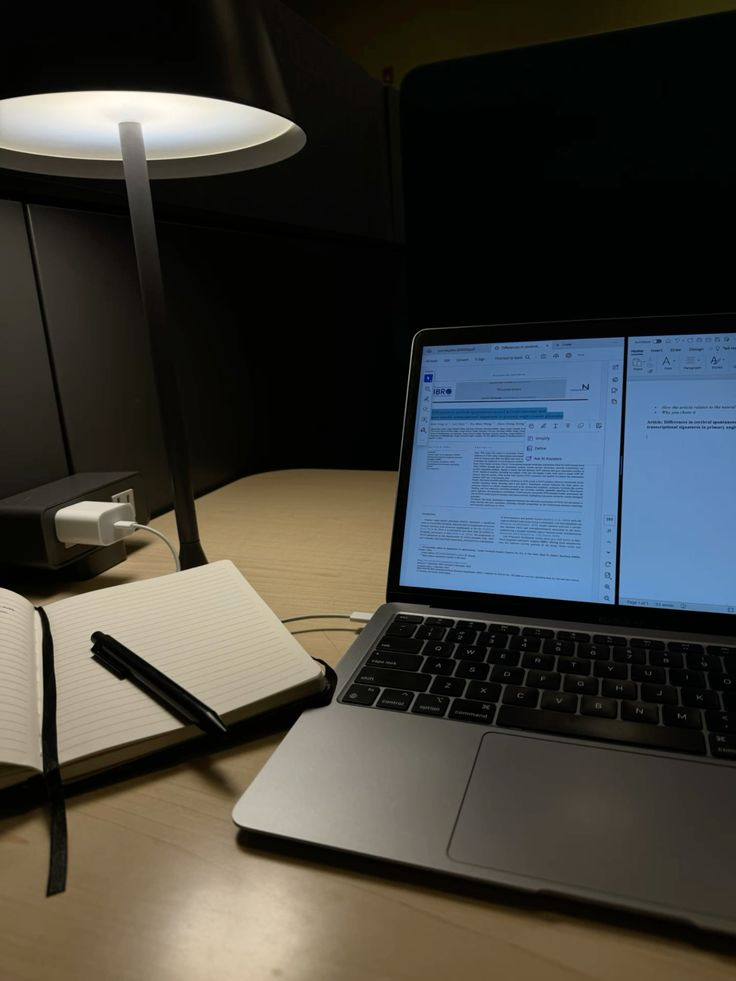

Respeito às diferenças
Pessoas autistas podem apresentar diferentes formas de comunicação, aprendizagem e interação. Cada pessoa possui suas próprias características, necessidades e maneiras de compreender o mundo.
Por isso, respeitar as diferenças é uma parte importante da inclusão. Isso significa evitar preconceitos, compreender que nem todas as pessoas aprendem ou se comunicam da mesma forma e criar ambientes onde todos possam participar.